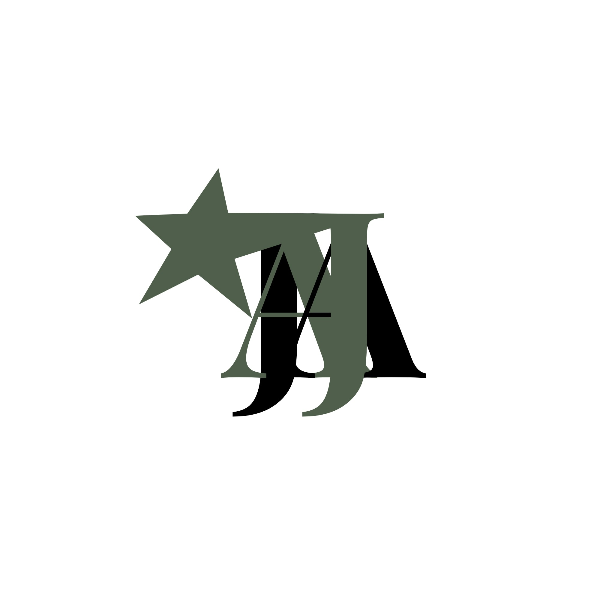

Web & digital
Website Design · Landing Page Design
UI Design · UX Design
I’m Criza, a web & visual designer turning
ambitious ideas into memorable digital experiences.
From expressive campaigns to considered identities.
A selection of ideas brought into focus.
No projects match. Try another search or category.
Original work, thoughtfully presented. Concept explorations are labeled throughout.

A PERSONAL MARK. A DISTINCT POINT OF VIEW.I’m Criza Panuelos. I create websites and visual identities that balance bold expression with a clear purpose.
My work brings together earthy palettes, expressive typography, and a love for texture. Whether it’s a landing page or a brand’s first impression, I believe every detail should earn its place.
Let’s make something meaningful ↗One considered visual direction.
Every touchpoint working together.
Website Design · Landing Page Design
UI Design · UX Design
Dashboard Design · Mobile App Design
Responsive layouts · Interactive prototypes
Brand Identity Design · Social Media Design
Campaign visuals · Typography
Your goals, your audience, your vision.
Find the context and opportunities.
Give the experience a clear structure.
Build a distinctive visual language.
Connect the details. Refine the flow.
Prepare, test, and bring it to life.
A flexible toolkit for considered digital experiences.
Explore the visual decisions behind the work.
Client stories will be shared here as collaborations grow.
Be part of the next chapter ↗Have a vision in mind? Tell me what you’re building.
Let’s give it a distinctive point of view.
Direct email and social profiles are being updated.
You can prepare and download your project brief below.